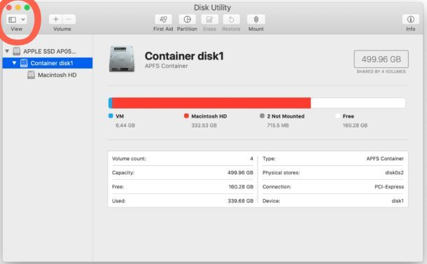
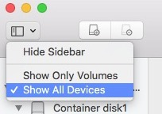

Since the release of macOS Catalina, Apple made the ability for users to downgrade their macs to older OS harder and even removed OS X Yosemite(10.10) and older from the mac app store which is very unfortunate. but no worries! this tutorial shows you how you can downgrade your mac to the legendary OS X Mavericks with the classic skeuomorphic design.
USB Stick (8GB or bigger)
Mavericks Installer (Google Drive Link)
Patience
1. This is actually a really easy one! after you download the Mavericks you need to open the dmg file and drag the .app file inside your applications folder and since you can't open it on a newer OS version which im assuming you are on, your only option would be to make a bootable installer on your usb. so plug in the usb and run this command (WARNING: when you run the command it will format your usb and remove the data on it)
sudo /Applications/Install\ OS\ X\ Mavericks.app/Contents/Resources/createinstallmedia --volume /Volumes/Your USB Name --applicationpath /Applications/Install\ OS\ X\ Mavericks.app
2. Now your usb is ready to boot on but we need a clean drive to install it on which is pretty easy to make if you don't have one.
3. a) Search and open the disk utility app and on the top left (as shown in the picture) you see an option to show all drives.

b) Select you mac's drive and click on partition. it may ask you if you want to partition or add volume to your drive, select partition
c) Add any amount you like and partition it as Mac OS Extended (Journaled) and partition the drive
4. After you got your drive ready, restart your mac and hold option/alt when it turns back on and wait until you see your bootable drives. choose you usb and wait for the installer to boot up.
5. now you can just choose the drive you partitioned for it to install the os on and go through the setup and you're done!
If you get a server error while installing you can change the date back to 2015 using this command date 1119134719 (formats like this: date {month}{day}{hour}{minute}{year} which in this case is Nov 19, 13:47 or 1:47pm SHOULD BE 24 HOUR FORMAT, 2019)